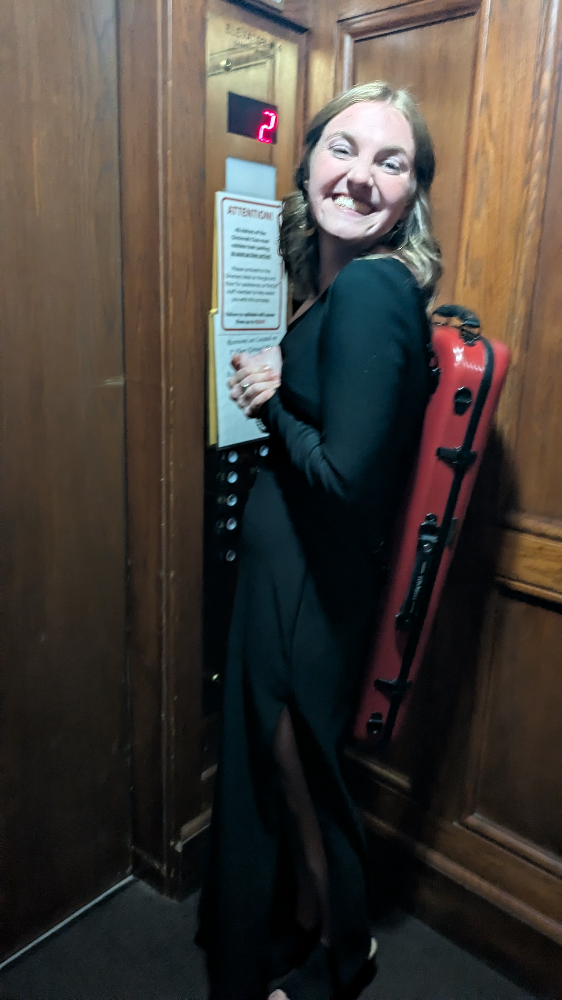
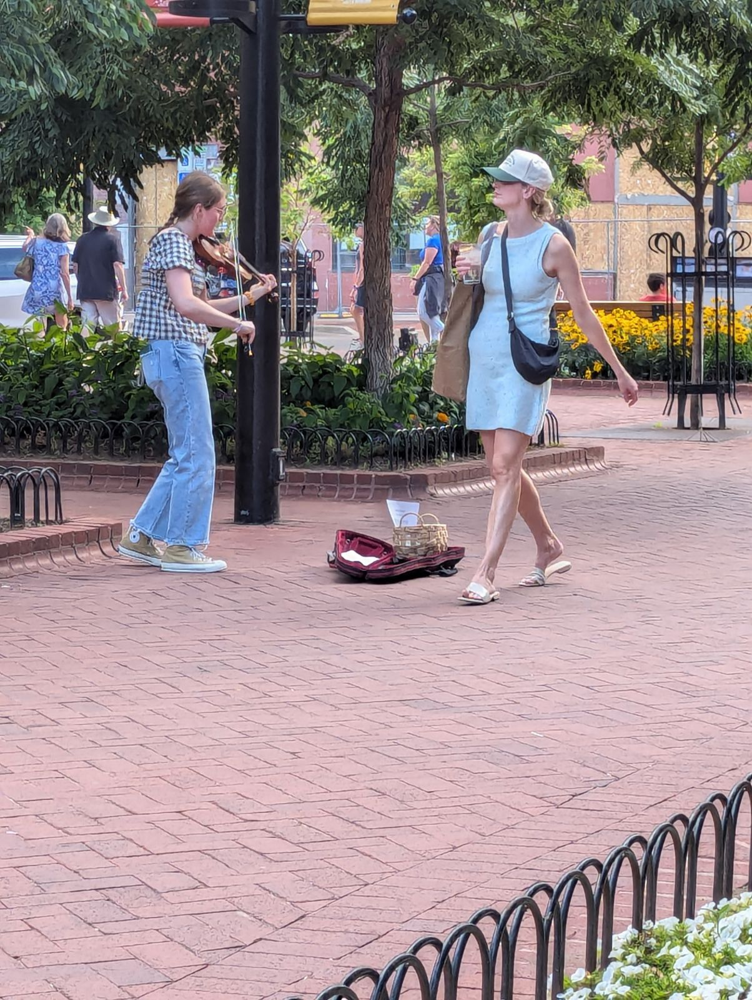
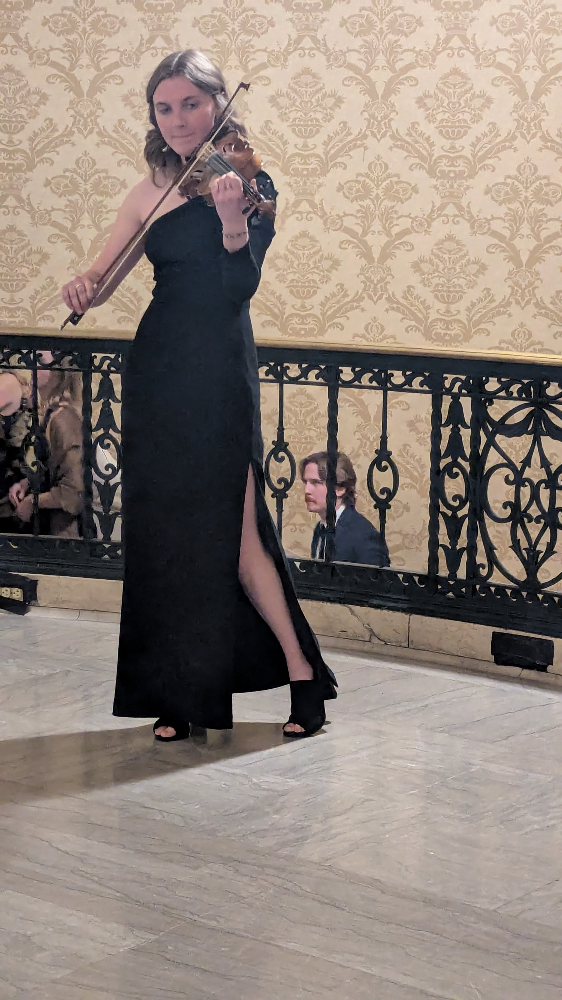
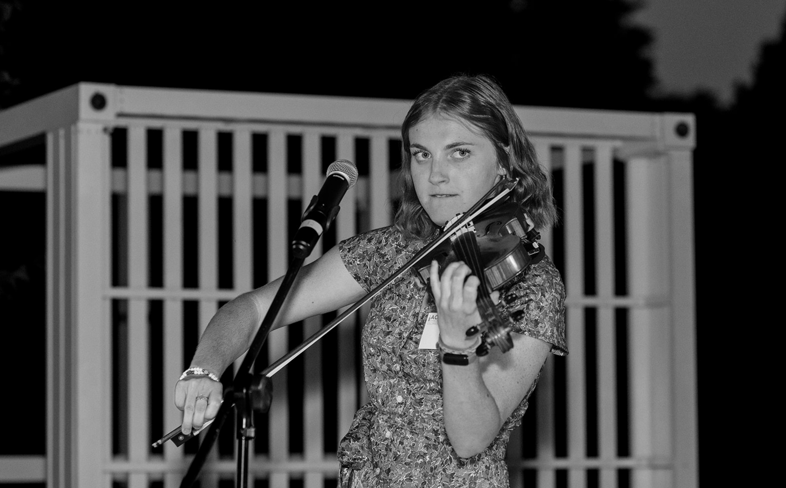
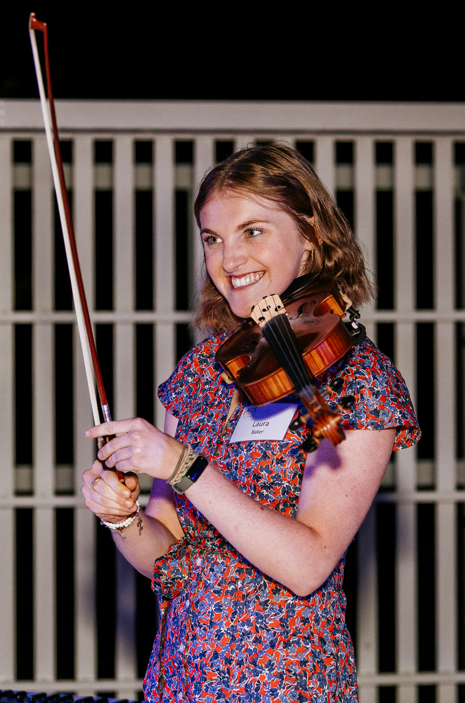
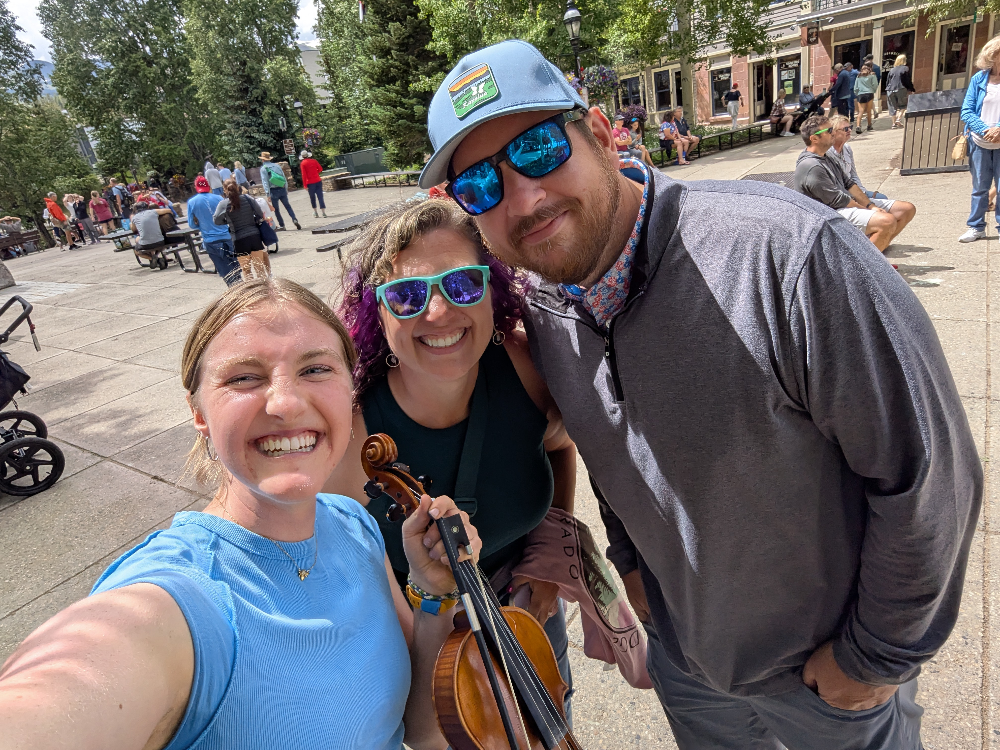
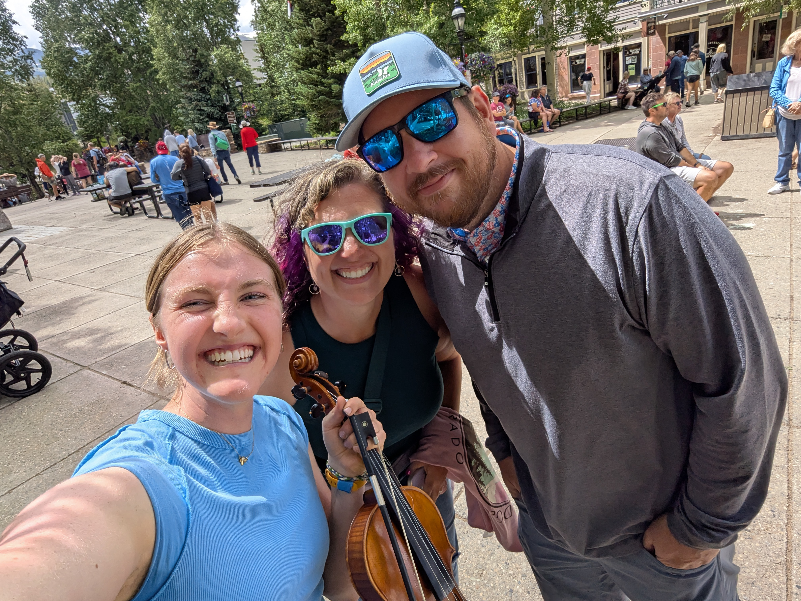
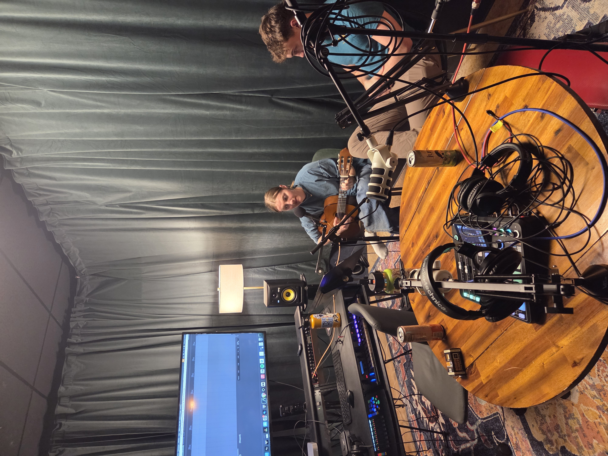

MUSIC
This energy that our brain picks up has a magical way of holding memories, expressiong emotions, and changing the quality of our brains, hearts, and (probably) souls. I could go on and on about the beauty of music like the mathematical elements of it, the poetry of it, the music theory, the connections of it with nature, and so so much more.
How it all started...
The love for music started with the violin. My mom took me to the Arvada Center for a insturment sale that was going on. I was like 10 at the time and loved to attach emotion to very specific things for purely the reason of doing so. One of those things was the violin. We are roaming around and I, with my whole heart and soul, began begging my mom for a violin. My mother, being the wise woman she is, knows all too well that when a kid says they will do something that is ot normally the case. She asked if I would do lessons and really commit to learning the violin. I said yes a million times and I meant it. This was not just any temper tantrum. We left that day without a violin (so I thought). Christmas morning, I had opened all my gifts and was picking up the trash when all of a sudden my parents morioned to the fireplace where they said I "had missed a gift". Me? Miss a gift? C'mon! But surely enough, there leaning against the fireplace a red vioin case from Golden Music
And so it began...
My mom found a violin teacher for me named Elizabeth. She had played on Americas Got Talent with her family, fiddling and Irish Step Dancing. She had long brown irish hardworkingand and was basically the coolest person I had ever met. I took lesson from her for one year where she taught me the absolute (BUT INSANELY IMPORTANT) basics. How to hold the violin, how to bow, how to rosin, and we got a little through Suzuki book 1. I do not remember much but the two songs I have in my head (eternally I bet) are Blue Ridge Run and Chase Me Charlie. These two Elizabeth had me memorize for my recital .That year (although so short) was where the seed for the love of music started growing.
Elizabeth got married and moved to California and I cried pretty hard. I never really found another teacher as amazing as her til my freshman year of college. I was on and off playing, not really loving it at all. I only did it when I had lessons, and the teachers I had I did not click with so...really...there was no violin for some years.
Middle School Orchestra
I think is where my love for the people of music began. Most of it was spent goofing and tazering people with our bows but I loved orchestra (not necessarily for the music). My conductor in middle school was super cool though! MR KIRKWOOD. He did not know the violin and could not teach me much, but I thought he was awesome.
Flash forward to covid Year of highschool
I was probably 15 now and kind of hated playing my single quarter note violin 2 sheet music but had nothing to do. One night during quarantine, my neighbor opened his window and started playing his trumpet. It was kinda amazing. My mom was like, "Laura laura laura! Get our there and start playing with him!" I was like, "Heck NO! What am I supposed to play, all I have is violin 2 quarter notes from Pirates of the Caribean" BUT his playing was SO cool, and I really did want to join I just did not know what to play. I had nothing memorized...or did I?
Chase Me Charlie
I searched and searched in my brain for what to play and I knew I knew ONE song, well, and by heart...from when I was 10 years old. I whip out my violin and begin playing Chase me Charlie as crunchily as a middle school violinst can play Chase Me Charlie. By the end of our jam across houses we had a little group of neighbors listening to us shoot different song sback and forth. As I kept playing I realized that if I play a low two on D, A, and E strings, and a low one on the E I could make anything kinda work if I landed on a low two. AND MAN!
...that opened the whole world to me
I couldnt believe I did not need sheet music. I wondered why notes sounded better in some spots.Why I "couldnt" play an G# in Chase Me CHarlie without it sounding strange. Why the C always sounded good to land on. I started playing all the time, taking Chase Me Charlie and changing it to how I wanted it to go. I actually do not think you understand how much I fell in love. Playing ALL the time. I googled everything about keys and music theory. I learned the classic WWHWWWH, what half steps were and dissected every song I listened to to figure out its key.
I realized if I could find the key of a song I could figure out how to play (no sheet music required). I learned Somewhere over the Rainbow, dozens of Disney Songs, Maroon Five Songs, and Happy Birthday. Simple songs but I was soing some intense ear training without realizing it. AND I luh luh luh loved it.
Highschool is where it really picked up...
(because things got harder). Worrying about how you look, friend group dynamics, making friends, and everything became quite overwhelming in highschool. And I found absolute solace in the violin. I remember probably like every day coming home from school, throwing my backpack on the floor and opening up my case. OH like a perfect breath of relief hearring that sipper unzip. Id sit and re "play" the day. Thinking throuhg each event and lettiing my fingers run along the strings.
It kinda was just my thing so I never did much with it, I played in all school mass (I went to a Catholic Highschool) a couple times becasue (another legend in my life) Mrs Nowak told me I could play "whatever I wanted". So awesome! That is where I thrive, with a key and freedom! I FIRST violin in an orchestra of FOUR people (no need for applause) my senior year of highschool, and that was most of my training on the instrument.
Here I am...

Busking on Pearl St

Playing for weddings

Playing for ACE Scholarships


Meeting so many musicians
 

And ALWAYS making up new songs
And I hope SO MUCH MORE TO COME...
Like producing an album...with my own words (how exciting)

I am learning so much each and every day (I decided I am going to minor in music which is helping)
If you have read this far and need some soul-playing-improvised violin or want to listen to my music.
PLEASE CONTACT ME and I would love to talk through some ideas for what you want music wise.
OR if you just want to talk music! I love every bit of it (as you can see by this website page)
Dont forget to follow my instagram @ laura_loo_music